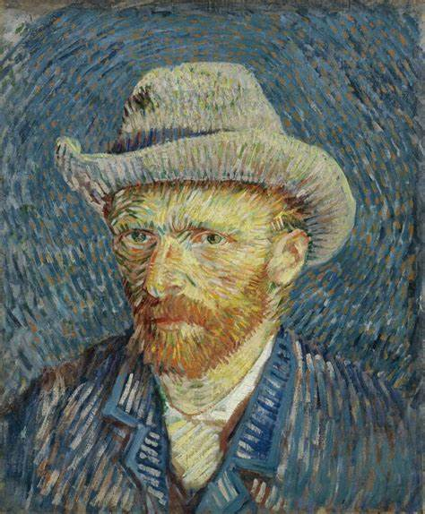

A arter consola aqueles que são quebrado pela vida
Van Gogh (1853-1890) foi um pintor holandês do final do século XIX e um dos maiores expoentes do pós-impressionismo. Seus trabalhos foram valorizados depois de sua morte e tiveram grande influência na arte do século seguinte, sobretudo na vertente expressionista. Foi um homem intenso, que usava a arte como ferramenta de sobrevivência em meio a uma agitada e instável saúde emocional e psicológica. É considerado um verdadeiro gênio da pintura. Teve uma carreira relativamente curta como pintor, cerca de dez anos. Entretanto, produziu uma enorme quantidade de telas, pois trabalhava incessantemente, nos deixando um legado impressionante e carregado de paixão
Vincent Van Gogh, nascido em 1853 na Holanda, teve seu interesse pela arte despertado pela mãe durante a infância. Estudou em diversos colégios, mas não se sentia feliz. Aos 13 anos, frequentou o ensino médio em Tilburg, mantendo Theo, seu melhor amigo, como companhia constante.
Na adolescência, Vincent trabalhou na galeria de arte de seu tio em Paris e depois foi para a Inglaterra como professor. Ele teve uma relação intensa com a religião e tentou estudar Teologia em Amsterdã, mas não foi aprovado. Posteriormente, trabalhou como missionário na Bélgica, mas foi dispensado por seu temperamento instável. Van Gogh enfrentou dificuldades em relacionamentos, isolando-se, tendo episódios de depressão e romances mal-sucedidos. Ele era magro, de olhos claros, cabelos ruivos e barba.
Van Gogh pintou mais de 400 telas, onde retratou camponeses, a natureza, a miséria e fez autorretratos. Durante a vida, só realizou uma venda. Atualmente, suas obras estão entre as mais caras do mundo.